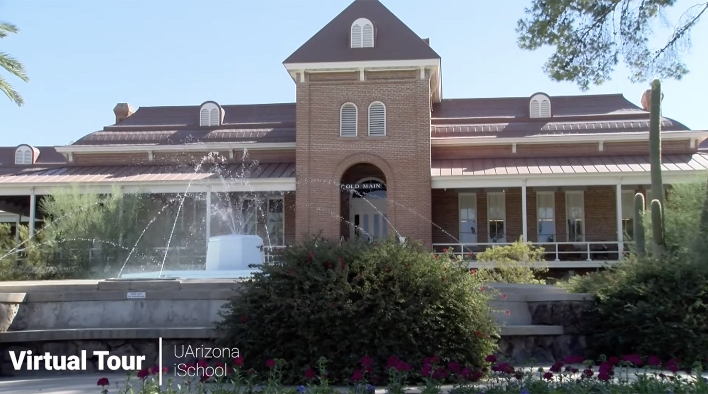

Join Us
We're growing — come build trustworthy AI at the interface of human and sociotechnical processes.
SAIL is always excited to meet self-motivated researchers who want to study LLMs and AI agents and apply them to solve real-world problems. We value people from diverse backgrounds — information science, computer science, public health, engineering, social science, and beyond.
Who we're looking for
If you're unsure where you fit, reach out — we're happy to talk.
We currently have one funded PhD position open, and we warmly welcome research interns to apply. If you'd like to join us as a PhD student, please apply through our PhD in Information program and list Dr. Lingyao Li as your preferred advisor.
PhD Students
We currently have one funded PhD position available through the PhD in Information program. Prospective students interested in LLMs, human-AI interaction, or AI for health and urban systems are encouraged to apply and email Dr. Li in advance.
Research Interns
Master's, undergraduate, and visiting students are welcome to join as research interns or remote interns. It's a great way to gain hands-on experience with LLMs, AI agents, and applied data analysis while contributing to real projects.
Postdocs & Visitors
We occasionally host postdoctoral researchers and visiting scholars. When positions are available, they will be posted here, along with details on how to apply.
Why the University of Arizona
The University of Arizona is Arizona's flagship land-grant university, an R1 research institution and member of the Association of American Universities (AAU). It sits in Tucson, a college town ringed by mountains in the Sonoran Desert that pairs a relatively low cost of living with a warm, sunny climate, a vibrant food scene (the first UNESCO City of Gastronomy in the U.S.), and easy access to hiking, biking, and the outdoors year-round.
Its global standing is outstanding: in Times Higher Education's World University Rankings 2026 it tied for No. 138 worldwide, and in U.S. News & World Report's 2026–2027 Best Global Universities ranking it rose 13 spots to No. 102 worldwide and No. 20 among U.S. public universities. The university surpassed $1 billion in total research activity in fiscal year 2024, ranking among the top 20 public research institutions for the seventh consecutive year — a place where research scale and quality of life reinforce each other.
Why the College of Information Science
Our home, the College of Information Science, is a member of the iSchools consortium working at the intersection of people, data, and technology. It leads the university in human-centered computing and serves as a catalyst for interdisciplinary collaboration, with research spanning the areas the lab lives in — from AI and machine learning and AI and society to health, human-computer interaction, policy and ethics, and library science. Several programs are nationally and globally ranked, including the #1 cybersecurity bachelor's program (Programs.com, 2026), a top-four master's in data science (Fortune, 2025), and a top-four global ranking in library and information science (ShanghaiRanking, 2025).
It's also young and fast-growing: the unit became its own college in 2023, was renamed the College of Information Science in 2024, and integrated the College of Applied Science and Technology in 2025 — a college still defining its shape, where new researchers help set the agenda rather than inherit a fixed one.

How to apply
The best first step is a short, personalized email to Dr. Lingyao Li. To help us respond quickly, please include:
- Your CV / resume and (if applicable) transcripts.
- A few sentences on your research interests and which SAIL area excites you.
- The role you're interested in and intended start term.